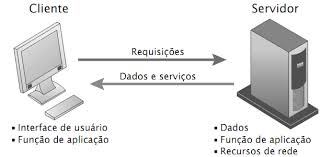

SIG-BASE
Sistema de Informações Gerênciais da Base de Hidrografia da Marinha em Niterói
Sobre o Sistema:
- A proposta desde projeto é desenvolver um sistema de apoio a decisão (SAD)
que permite integrar e assessorar os Encarregados, Chefes de Departamentos,
Imediato e o Senhor Comandante na tomada de decisão e apoio a gestão
Estrutura do Sistema:
- O sistema é baseado em 2 visão:
- - Visão Externa
- - Visão Interna
Visão Externa:
- Compreende nas páginas em que qualquer usuário tem acesso.
- Como por Exemplo: a página de pedido de serviço do BH-50
Visão Interna:
- Compreende nas páginas em que somente usuário devidamente cadastrado tem acesso.
- Como por Exemplo: a página de gerência de pedido de serviço do BH-50
Arquitetura Proposta:
- O sistema utiliza um arquitetura baseada em Cliente-Servidor, composta de
um servidor de banco de dados, um servidor de aplicação e as maquinas clientes.
- 
Metodologia de Desenvolvimento:
- O sistema está sendo desenvolvido em ambiente WEB e a regra de negócio é implementada em J2EE (JAVA)
Estrutura de Desenvolvimento:
- O sistema é concebido através do modelo de prototipagem, cujo modelo descreve uma abordagem que tenta
satisfazer as necessidade do usuário focalizando a interface do usuário, entre outras palavras, a cada modulo pronto
o sistema é apresentado ao usuário, caso satisfeito, se inicia os testes e por fim colocado em produção.
Equipe de Desenvolvimento:
- Hoje, a equipe de desenvolvimento é composta por 3 pessoas:
- 3º SG-TE Gustavo
- 3º SG-PD Andrea (Destacada da PNN)
- Erick (estagiário da Engepron)
Módulos em Produção:
segundo o projeto básico
- bh-08-01 >> Controle de energia elétrica e água do CNPA
- bh-30-01 >> Controle de Pessoal
- bh-30-02 >> Controle de Férias
- bh-30-08 >> Pedido de Serviço Telemática
- bh-30-09 >> Controle da rede da BHMN
- bh-30-10 >> Controle de fila de espera
- bh-50-01 >> Pedido de Serviço das Oficinas
Módulos em Implementação:
segundo o projeto básico
- bh-05-02 >> Planos de meta
- bh-10-folhan >> Folha N
- bh-20-01 >> Pesquisa de satisfação de rancho
- bh-20-02 >> Controle de Pedido de obtenção
- bh-30-04 >> Departamento de Saúde/li>
- bh-30-05 >> Departamento de Segurança/li>
- bh-30-11 >> Controle de permissionários
Perspectivas a Curto Prazo:
- Entregar o sistema de controle de pessoal e das oficinas e reestruturar todo o banco de dados do folha-N
Perspectivas a Médio Prazo:
- Entregar os sistemas da divisão de segurança e saúde e da obtenção
Perspectivas a Longo Prazo:
- Entregar o sistema do folha-N
-->